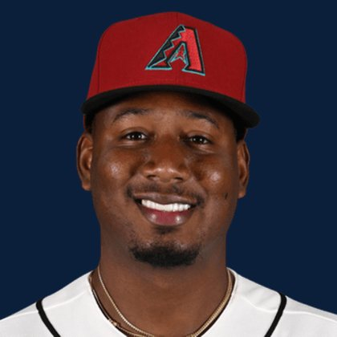

BASE KEEP
The Keep · The Diamond · The Farm
Player File · SS ARI

Geraldo Perdomo
#2 · SS · Arizona Diamondbacks · age 26 · B/T SR · 6' 2" / 210 lbs · MLB debut 2021 · Santo Domingo, Dominican Republic
Keep avg67.91
# Boards23
BK Value3,964
Spread18-135
Hitting
| Year | G | AB | R | H | 2B | HR | RBI | SB | BB | SO | AVG | OBP | SLG | OPS |
|---|---|---|---|---|---|---|---|---|---|---|---|---|---|---|
| 2026 | 123 | 442 | 59 | 108 | 17 | 9 | 43 | 17 | 75 | 66 | .244 | .355 | .371 | .726 |
| 2025 | 161 | 597 | 98 | 173 | 33 | 20 | 100 | 27 | 94 | 83 | .290 | .389 | .462 | .851 |
The Keep#67BK 3,964
The Lineup#51BK 4,706
The Diamond#68BK 3,923
The 2026 line
Keep #67 · avg 67.91 · 23 boards · .244 / 9 HR / 17 SB / .726 OPS
Baseball Savant
Starcast · spray · pitch
Percentile ranks (Starcast) plus the official Savant spray chart for bats and pitch chart for arms. Open the full Baseball Savant page.
Batter · 2026
xwOBA
52
xBA
48
xSLG
13
xISO
11
xOBP
89
Barrels
18
Barrel %
11
EV
22
Max EV
60
Hard Hit %
11
K %
92
BB %
95
Whiff %
97
Chase %
94
Speed
40
Arm
48
OAA
97
Bat Speed
2
Squared Up
96
Swing Len
18
Hits spray chart
Minus
- Board spread 18-135 (117 ranks).
Board graph
Spread 18-135 · 23 sources
Every Board
Spread 18-135 · 23 sources
| Source | Rank |
|---|---|
| TDG Points | 18 |
| Dynasty League Baseball | 51 |
| Four-Seam Fantasy | 53 |
| Fantasy Baseballers | 56 |
| RotoWire | 61 |
| FanGraphs The Board | 61 |
| Razzball | 67 |
| Enos Slaughter | 67 |
| CBS Sports | 68 |
| Ottoneu | 68 |
| ESPN | 69 |
| NFBC ADP | 69 |
| Baseball Prospectus | 69 |
| The Dynasty Dugout | 69 |
| Baseball America | 69 |
| MLB Pipeline mix | 69 |
| Mastersball | 69 |
| Yahoo Fantasy | 69 |
| ATC ROS | 69 |
| Pitcher List | 72 |
| FantasyPros Dynasty ECR | 81 |
| The Athletic | 83 |
| RotoGraphs Model | 135 |
BK News
All players · The Keep · The Farm · The Diamond · BK News · The Lineup · Pitchers · Calculator